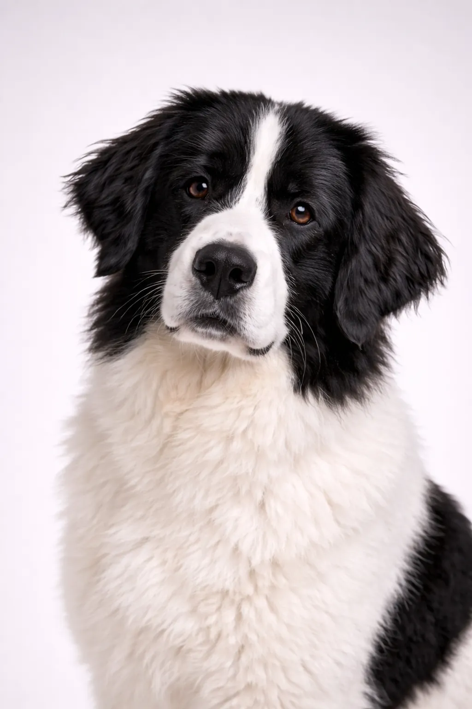

工作犬组
超大型
兰德希尔犬
温柔、耐心，非常适合有孩子家庭的伴侣。
起源
德国/加拿大
寿命
8-10 年
身高
67-80 cm
26-31 in
26-31 in
体重
50-68 kg
110-150 lbs
110-150 lbs
品种评分
活力水平3/5
美容需求4/5
可训练性3/5
适合儿童5/5
适合公寓1/5
吠叫程度2/5
性格
温柔耐心冷静高贵慷慨
概述
与纽芬兰犬有亲缘关系，兰德希尔犬是拥有独特黑白被毛的温柔巨人。它们是耐心、高贵的犬只，热爱孩子。
性格
兰德希尔犬以温柔、耐心、平静著称。它们非常适合与儿童相处，是出色的家庭宠物。早期社会化有助于它们成长为全面发展的伴侣犬。
健康
整体健康，寿命为8-10年。常见问题包括髋关节发育不良、胃扭转和皮肤问题。定期兽医检查和预防性护理非常重要。保持健康体重有助于预防许多健康问题。
运动
中等运动需求，每日散步和定期玩耍即可。喜欢体力活动与放松时间相结合。互动游戏和训练课程提供精神刺激。规律的运动计划使它们保持健康快乐。
⦿ 这个品种适合您吗？
✓ 最适合
- 有足够空间的家庭
- 想要温柔巨人的人
- 水上运动爱好者
✗ 不太适合
- 公寓居民
- 不喜欢流口水/掉毛的人
我们的评价: 与纽芬兰犬有亲缘关系，兰德希尔犬是拥有独特黑白被毛的温柔巨人。它们是耐心、高贵的犬只，热爱孩子。